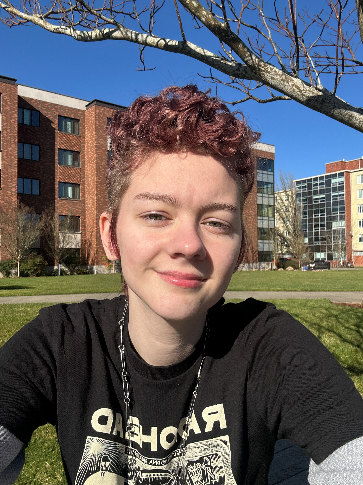

Current Members

Cheng Li
Assistant ProfessorAs an environmental engineer, I study electroactive microorganisms that can interact with electricity. Yes, some of them are conductive — how cool are they!

Jenna Porter
PhD StudentI am a PhD student in the Biological and Ecological Engineering department at Oregon State University, working with marine microbial fuel cells. Specifically, I focus on culturing the bacterial electrogens involved using novel methods. I am hoping to generate isolated cultures to study interactions within defined microbial communities. I graduated with my BS in Microbiology (2023) and a MS in Food Science and Technology (2025) at Oregon State University.

Keira Wilson
Undergraduate Research AssistantI am a sophomore undergraduate majoring in microbiology with a minor in chemistry. Currently, my focus is on maintaining, isolating, and analyzing cultures of cable bacteria from local sediments. I am also assisting with the maintenance and construction of marine microbial fuel cells.
Past Students
- Erik Leer — Undergraduate Research Assistant, JMU
- Abigail Fischer — Undergraduate Research Assistant, JMU
- Maria Kruml — Undergraduate Research Assistant, FYRE Scholar, JMU
- Davaunte Murray — Undergraduate Research Assistant, JMU
What We Do
Our team is dedicated to pioneering research in electrobiotechnology. We work on innovative solutions in environmental technology, aiming to address sustainability challenges. Our focus areas include bioenergy, wastewater treatment, and microbial electrochemistry.
Our Team in Action